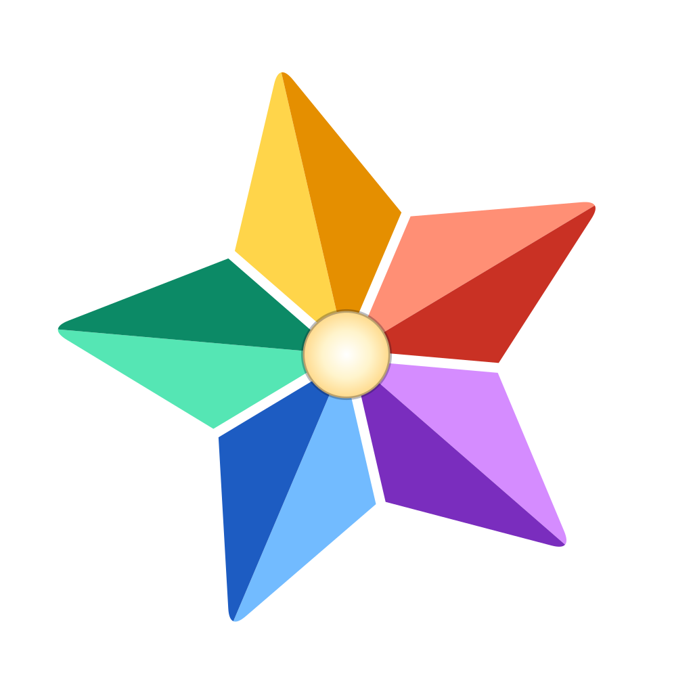

Перегляд і відтворення локальних медіа
Відкрийте локальну теку в браузері, щоб переглядати фото й анімацію, відтворювати відео та аудіо й запускати слайд-шоу з утриманням екрана.

FastMediaSorter for Web
Сортувальник медіа в браузері
FastMediaSorter for Web приносить перегляд, відтворення, швидке сортування за теками та доступ до Media Exchange Server у браузер для систем, де не працюють нативні програми.
Для macOS, Linux, ChromeOS, iOS, iPadOS та всіх, хто не може встановити нативну програму.
Відкрийте локальну теку в браузері, щоб переглядати фото й анімацію, відтворювати відео та аудіо й запускати слайд-шоу з утриманням екрана.
Виберіть до десяти тек призначення і натискайте 1-9 або 0, щоб перемістити відкритий файл і перейти до наступного. Файли з тим самим іменем не перезаписуються.
Переміщення файлів до тек призначення працює в Chrome та Edge на комп'ютері; в інших браузерах елемент лишається видимим і вимкненим із зазначенням причини.
Під'єднайте браузер як ще один пристрій до Media Exchange Server: реєструйтеся за запрошенням, переглядайте пристрої й теки, приймайте трансляції та користуйтеся спільним буфером.
Керуйте сервером Media Exchange Server із браузера та зберігайте локальний ZIP-звіт діагностики без імен файлів, паролів і ключів.
web/ з вашого Media Exchange Server (webDir) чи будь-якого статичного HTTPS-хостингу.Відкривайте теки із зображеннями, анімацією, відео та аудіо безпосередньо в браузері. Запускайте слайд-шоу з утриманням екрана там, де підтримується Wake Lock.
У Chrome та Edge на комп'ютері виберіть до десяти тек призначення та сортуйте файли клавішами 1-9 і 0.
Браузер працює за спільним протоколом DEVICE-EXCHANGE. Закритий ключ пристрою ніколи не залишає браузер, а сервер не може прочитати зашифрований вміст. Під'єднання облікового запису обміну - не те саме, що локальна роздача тек через SFTP у програмі для Windows: обліковий запис живе на Media Exchange Server, який тримає його власник, у браузера немає власного SFTP, і для роботи цього вебзастосунку не потрібна жодна установка на Windows.
Докладніше на спільному порталі Обмін медіа між пристроями та сторінці  Media Exchange Server.
Media Exchange Server.
| Рушій / Браузер | Перегляд | Аудіо та відео | Сортування в теки (1-9, 0) | Обмін і адмін |
|---|---|---|---|---|
| Chrome / Edge (комп'ютер) | Підтримується | Підтримується | Підтримується | Підтримується |
| Chrome / Samsung Internet (Android) | Підтримується | Підтримується | Видимо, вимкнено (немає запису в теку) | Підтримується |
| Firefox (комп'ютер, ESR, Android) | Підтримується | Підтримується | Видимо, вимкнено (немає запису в теку) | Підтримується |
| Safari (macOS, iOS, iPadOS) | Підтримується | Підтримується | Видимо, вимкнено (немає запису в теку) | Підтримується |
Функції, що потребують самої операційної системи - прослуховування порту, робота після закриття вкладки, прямі сокети чи зв'язок із годинником - залишаються в нативних програмах: Fast Media Sorter & Organizer (Android) і Fast Media Sorter & Sharing for Windows (Windows) - Медіа- та файловий менеджер для Windows: сортування фото й відео однією клавішею. Вона встановлюється як чотири необов'язкові частини - медіа- та файловий менеджер, локальна роздача тек через SFTP, операції з файлами за розкладом і Media Exchange Server, який ви тримаєте самі - починаючи з менеджера або з сервера роздачі тек, і жодна з них не потребує іншої; сервер обміну не входить до жодного опублікованого пакета, і для роботи цього вебзастосунку не потрібна жодна установка на Windows. Свою сторінку з варіантами установки називає сама програма для Windows.